How to Develop Orchestration Logic in APIs with Baker


Jordy Moos


Let's meet you
Who has made an API?
Who made "Multi step" API's or process?
Who wants to make me Spaghetti Bolognese?
Awesome Spaghetti Comp. Inc.


Interactions
Events


Ingredients


Baker
Baker
- Idea
- Why
- Interactions
- Ingredients
- Events
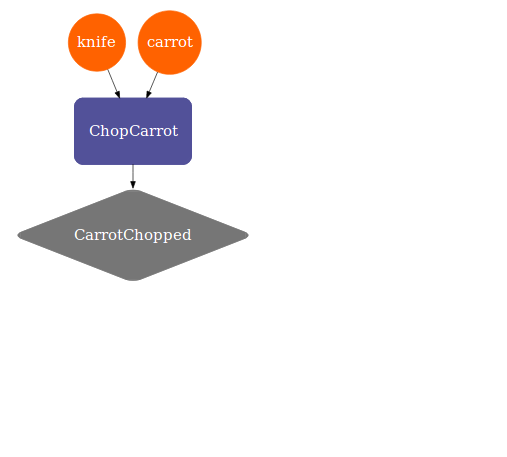
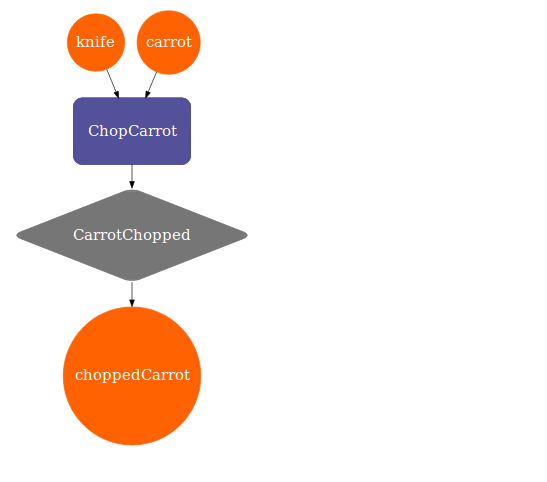
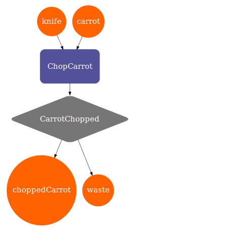
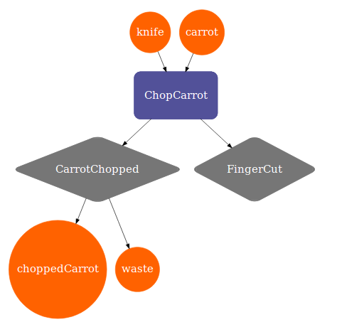
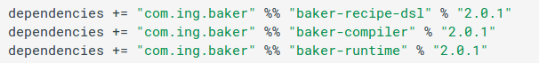
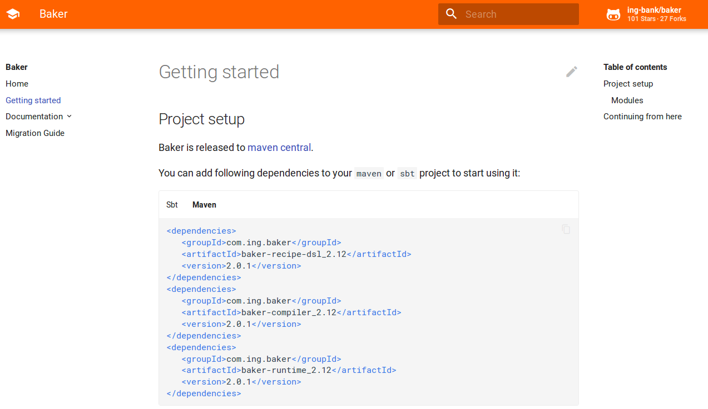
https://ing-bank.github.io/baker/getting-started
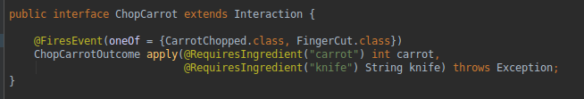
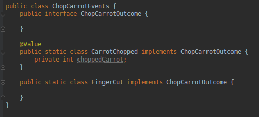
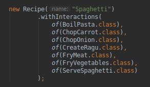
Sensory Events
- Allow us to interact with our Recipe
- Event to trigger an Interaction
- Event to provide Ingredients
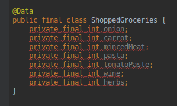
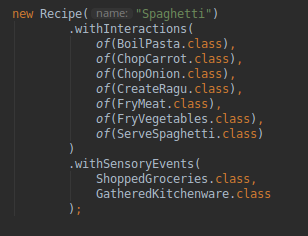
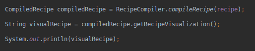
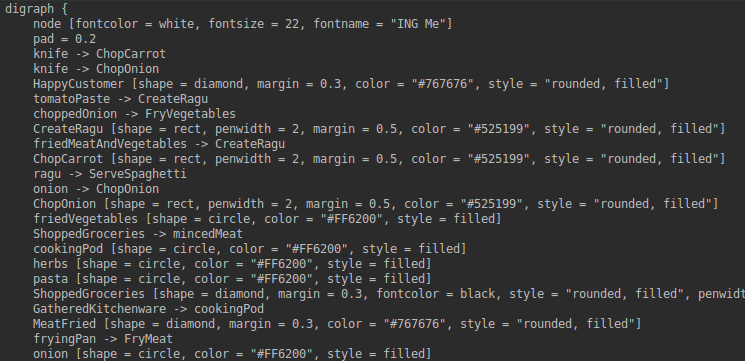
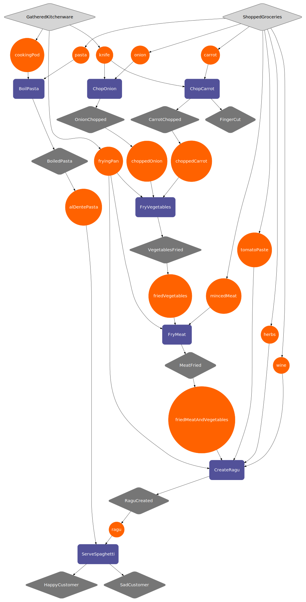
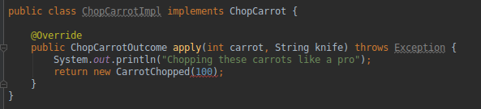
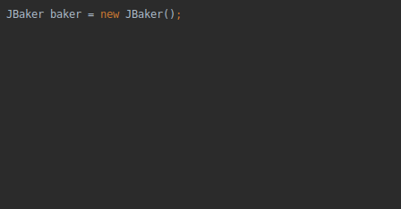
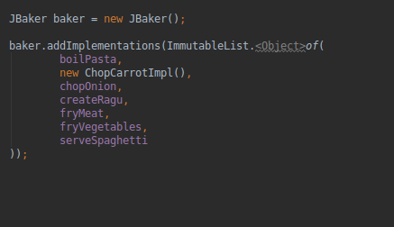
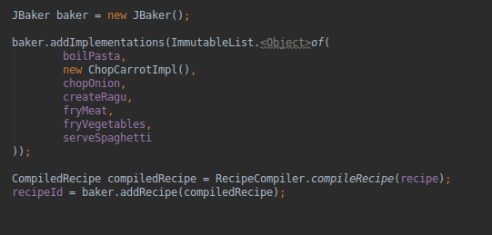
This was all "process instance" independent
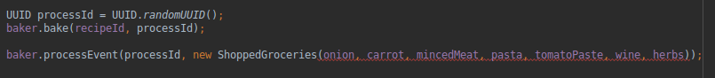
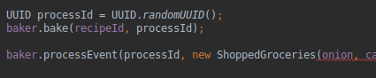
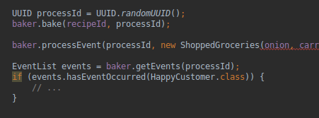
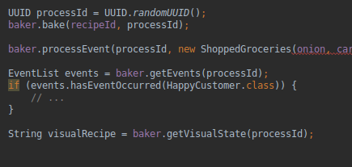
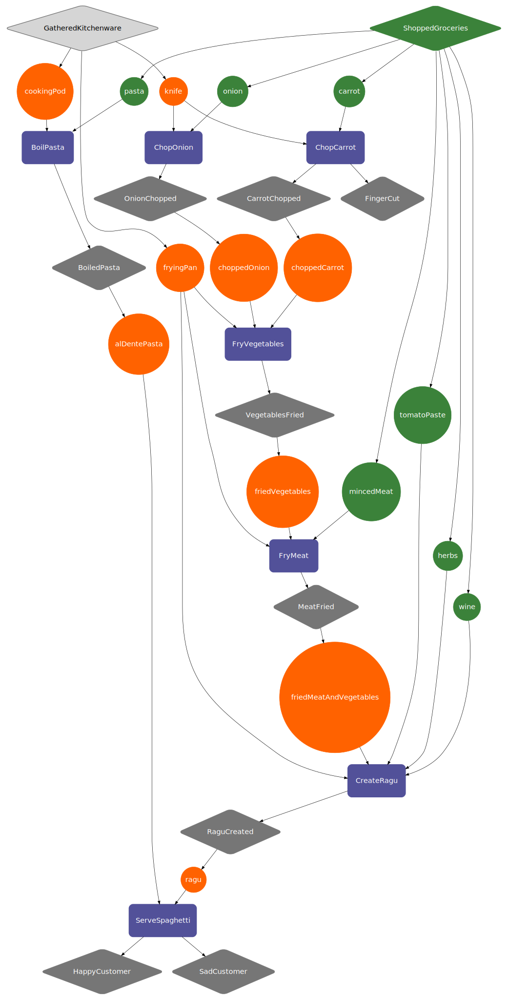
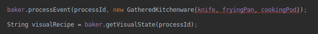
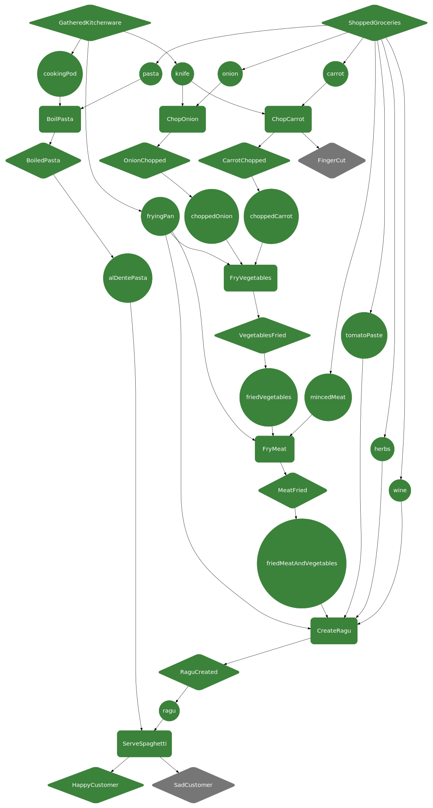
The road ahead
- Built in open tracing
- Baker as a Service
Handy links
- https://github.com/ing-bank/baker
- https://ing-bank.github.io/baker/getting-started
- https://cdn2.hercampus.com/styles/hcxo_standard_large/s3/hero-images/2018/10/01/Hartford-Baking-Co-19.jpg
- http://www.karenkavett.com/blogp/youtubeflowchart_final_big.jpg
- https://esosslfiles-a.akamaihd.net/cms/2016/01/3973b3075e27bbdf6731462824952b6b.jpg
- https://mtutriangle.org/assets/img/posts/Open-Source-Word-Cloud.jpg
- https://www.nasa.gov/sites/default/files/thumbnails/image/s65-55202.jpg
- https://www.parliament.nz/media/2978/crowd-with-raised-up-hands-istock.jpg
- https://www.thuisbezorgd.nl/foodwiki/uploads/2017/12/spaghetti-bolognese-1080x960.jpg
- https://cdn-image.realsimple.com/sites/default/files/styles/marquee_large_2x/public/1522180417/cooking-one-woman.jpg?itok=q32BfZyd
- https://www.yesmagazine.org/issues/affordable-housing/cooking-stirs-the-pot-for-social-change-20180627/sioux-chef-cooking.jpg/image
- https://www.brettfalcon.com/Portfolio/Conceptual/2/caption
- https://spinninrecords.com/media/cache/header_wide/uploads/media/page/0001/06/thumb_5325_page_ogimage.jpeg
- https://www.redlions.nl/wp-content/uploads/2017/03/Just-a-friendly-reminder.png
- https://industryeats.com/wp-content/uploads/2015/11/carrot-in-diced-pieces.jpg
- http://i.imgur.com/K1zhbbm.gif
- https://steemitimages.com/p/8SzwQbWfyXFcqEAwpKeHM3nTyuLgDJvVcgaZxvJSLJeWbxcmqHXEA87kbjFBLW5aeVsDvbNGvQs4HFg5gm2LjeLBLoKQwsTfqBGUaBcZkpwYEPMDJ2h?format=match&mode=fit
- https://i1.wp.com/devbasu.com/wp-content/uploads/2015/04/describe-your-ideal-boss.jpg?w=2400&ssl=1
- https://thenypost.files.wordpress.com/2015/09/mcdonalds.jpg
- https://www.techtiq.co.uk/kb/wp-content/uploads/2018/10/DIFFERENT-KINDS-OF-DEVELOPERS.png
- https://cdn.filestackcontent.com/rHXz4MARfqYkQM8odgrt
- https://static.parade.com/wp-content/uploads/2017/02/ThinkFaster-FTR.jpg
- https://herbertvanhoogdalem.nl/wp-content/uploads/2012/07/Schermafbeelding-2018-10-08-om-12.13.14.png
- https://www.ing.nl/media/ING_BB_Mobielopenen_tcm162-144525.png
- https://2e8ram2s1li74atce18qz5y1-wpengine.netdna-ssl.com/wp-content/uploads/2018/01/shutterstock_430205446-1024x673.jpg
- http://lh3.googleusercontent.com/bvlpdrxN8QqWKBhduyinSIqoX-DYQpsVIzArPsy5gScidTFfj7h-F8a5cR5WzVlKmaKd1W_8g2a5_SpORbQsryo